Projects
Thermohaline Circulation
During my final year at university, I had to select a topic to
study for my dissertation. As someone who is passionate about
climate change and sustainable practices, I wanted to complete
my own study on the effects of climate change. I decided to assess
how the circulation of our oceans could be affected under various
levels of freshwater release - and relate this volume of water to a
global temperature increase. This would allow me to see how disrupted
circulation patterns could become as our planet heats up, and I could
compare this with current temperature trends to estimate how long
until we can expect this level of disruption.
I began the project by studying Stommel's simple two-box model
(LINK???? OR IMAGE), which models the circulation between a cold,
fresh box representing polar water, and a warm, salty box representing
equatorial water. After deriving core equations for the behaviour of my
variables I expanded to an N-box model, so I could fit as many separate
'boxes' of water between the pole and equator allowing for a higher
resolution and more detailed results. I tested this model using
current-day ocean data and produced outputs within an acceptable range
of uncertainty.
Once I had validated my model I could begin to conduct my experiments.
I tested changes to circulation patterns under various volumes of freshwater
release, assessing the change to circulation strengths and direction before
drawing conclusions and discussing limitations of my model. One of these
limitations was the level of detail and so I moved to a 2-dimensional model,
including depth in my calculations. Once I had determined my 2D equations and
their solutions, I could run my model using parameters estimated using
real-world ocean data. This produced results representative of observed
circulation and temperature/salinity patterns, validating my model. This
allowed me to again experiment with various levels of freshwater release,
producing results adjacent with my 1D simulations, and observing the true
impact of climate change on our oceans.
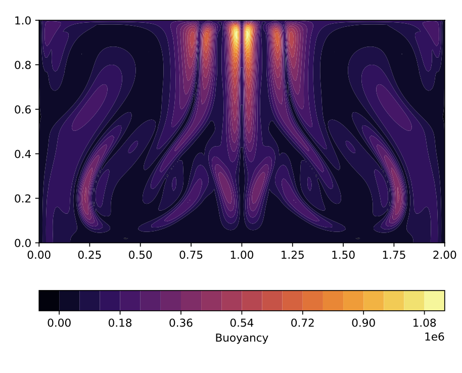
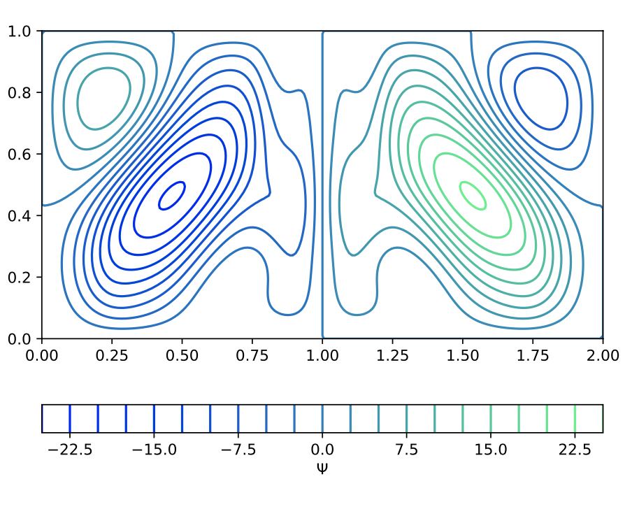
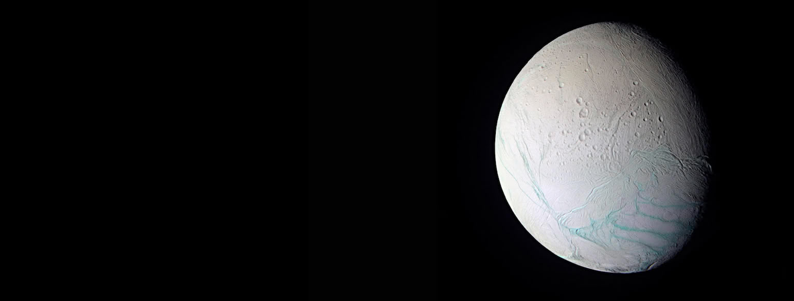
Subsurface Oceans of Icy Moons
Once I had completed my study on Earth's oceans, I decided to apply my model to
other ocean systems - looking at subsurface oceans on the icy moons of Europa and
Enceladus. This is a topic of active research, and as someone with a passion for
studying space I wanted to contribute my own research.
Taking my original model for Earth, I adjusted some parameters to produce simulations
more representative of these subsurface oceans. First, I looked at Enceladus - one of
Saturn's many moons. In Enceladus' ocean, the salinity distribution is like Earths,
however the temperatures are reversed (warmest at the poles and coolest at the equator).
One other notable difference is that diffusivity is stronger at the poles, whereas on
Earth it is similar across all latitudes. Finally, we must account for the fact that water
at the surface is actually cooler than deeper water. On Earth, surface water is heated by
the sun, whilst deeper water is cooler as thermal energy from the sun cannot reach it.
However, on Enceladus the sun has little effect - due to the distance and the icy layer
above the ocean. Because of this, water is heated more by the moons core than from thermal
energy from the sun - meaning deep water is warmer than surface water. After adjusting the
model to account for these differences, I calculated my parameters for this ocean, sourcing
much of my data from NASAs Cassini mission, which sampled plumes of water vapour from Enceladus.
I could then run my model and produce simulations for the behaviour of the ocean, which proved
comparable to other studies.
I followed a similar process for the Jovian moon Europa. As with Enceladus, the poles are warmer
than the equator, and the ocean is heated primarily from the moons core - not through surface
heating. On Europa, the circulation is mostly powered through tidal heating within the mantle,
not surface heating as on Earth. I ensured the model reflected that by scaling the impact of
surface heating down with respect to tidal heating. Again, I calculated parameters using data
sourced from NASA missions and produced results in alignment with studies from the likes of
Daphné Lemasquerier and Krista Soderund.
In the future I wish to develop my model using new data from future NASA missions
and extend this study to other celestial bodies. I may also look to apply my model
to other studies including renewable energy (wind and wave power) and species
migration.
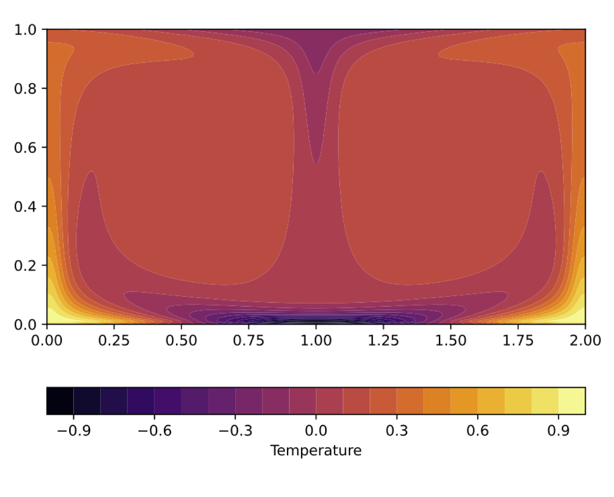
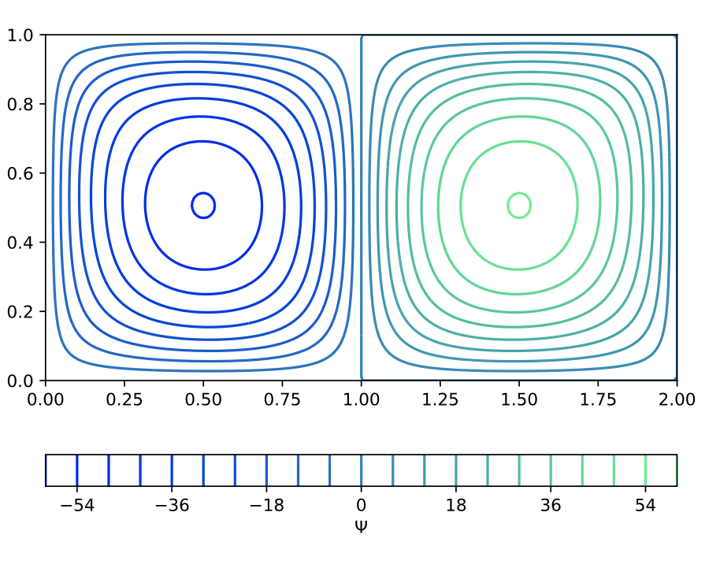
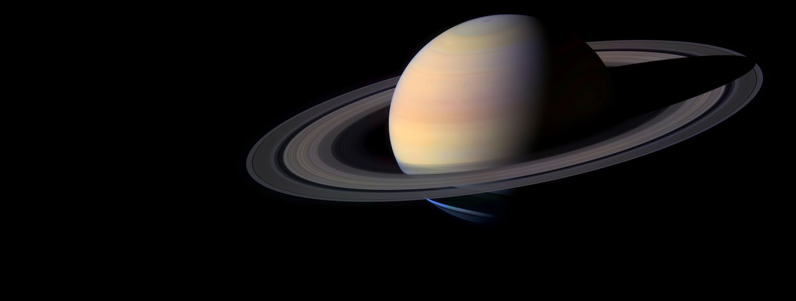
Orbital Mechanics
I have recently developed a Python programme to simulate motion of orbiting bodies.
It produces plots of various orbits within our solar system using the equation:
x = x^2 + a
The code allows a user to input a body of their choosing and produces an accurate
plot of its orbit using initial data sourced from NASA's horizon system. The user
also has an option to map the orbits of all planets (and Pluto) on one plot,
allowing for comparison. The orbits are created using initial values sourced from the
horizon's system, before incrementally time-stepping over the full length of the orbit,
with the position at each time calculated using the equation above. The only initial
values required are an initial position vector (x, y, z) and an initial velocity vector
(u, v, w), whilst I also input an orbit time to allow for faster simulations. I have
added varying colours and orbit times for each body, but plan to add more detail in
future. I want to allow a user to simulate orbits of various satellites, including
an option to add a fully customised orbit. I may also add more bodies including some
exoplanets and other systems outside of our solar system. I may also look at implementing
more detailed three-body interactions.
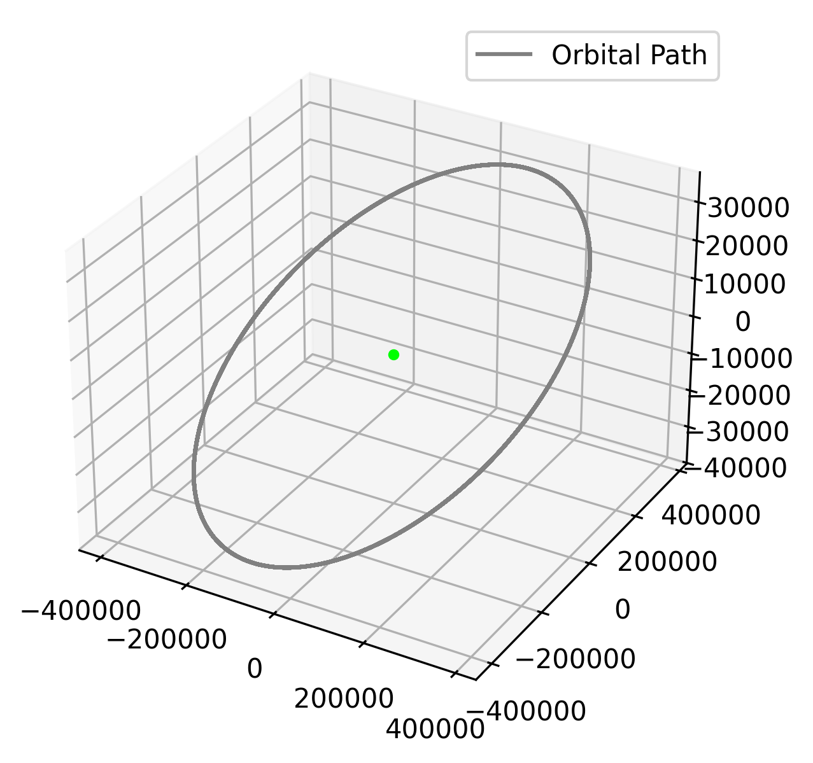
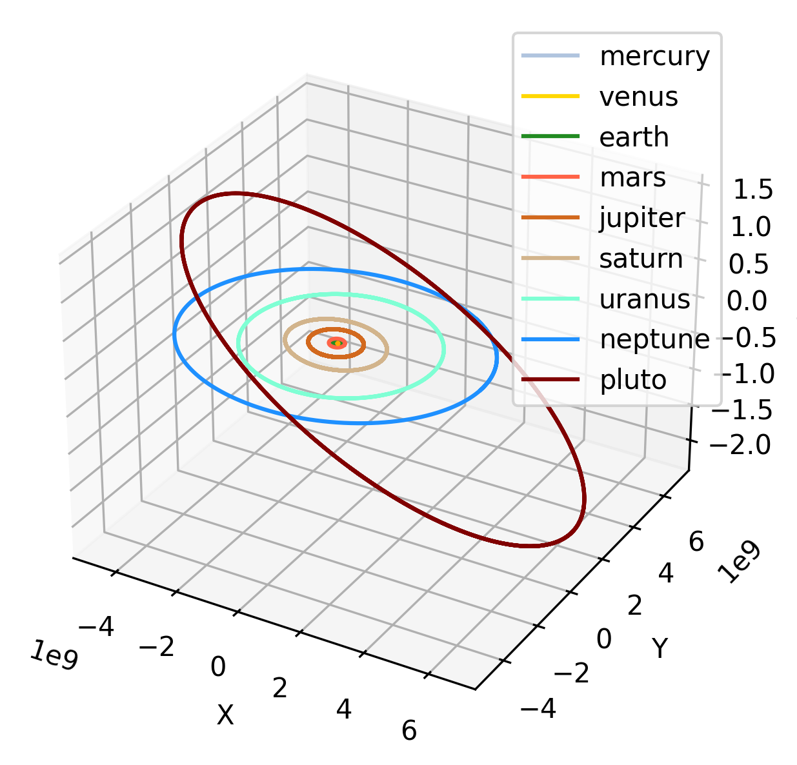
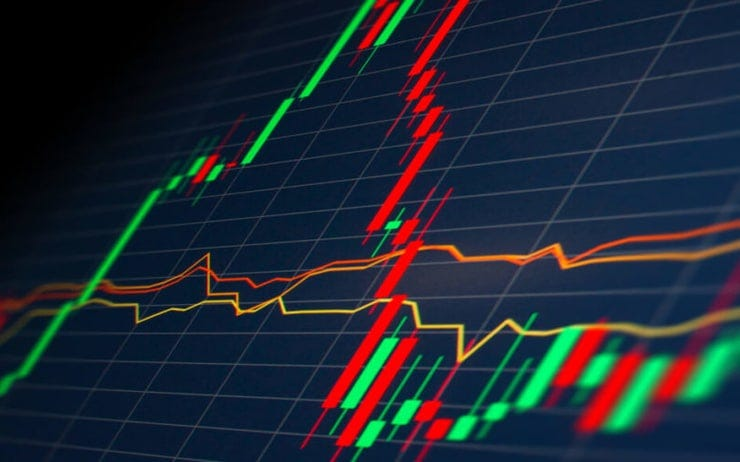
Brownian Study of Stock Behaviour
In early 2026 I decided to complete a detailed study of the stock market, an
idea fuelled by my passion for finance. I wanted to begin by revising the
mathematics of random walks and Brownian motion - topics I had studied at
degree level - to model asset prices, before applying some financial ideologies
to produce useful outputs.
First, I simulated the paths of N random walks over n steps, calculating their
mean and variance to be compared to results from theory. A plot of the paths
over time and a histogram of their final positions are useful visualisation tools
to ensure my model works smoothly. I then produced a new script to simulate
Brownian motion of N paths, before validating the model by analysing outputs.
Again, I produced a plot of a sample of paths, a histogram of final values, and
calculations of mean and variance. Additional sanity checks included a check for
independence of variables and a check of incremental mean and variance to ensure
the increments satisfy Brownian motion.
I then modelled asset prices using Geometric Brownian motion, a more realistic
pricing model. GBM is more useful here as prices will always remain positive and
changes to the price of an asset are proportional to its current price - providing
more accurate risk and return assessments. For my model I built paths following
GBM simulated over n time-steps. Again, the model is validated with path plots
and a histogram - this time plotting the log of the final positions to allow for
comparison to a standard Normal distribution. Additional validation comes through
the comparison of the models mean and variance to their analytical 'expected'
values.
Next, I looked to apply this model to some real assets such as European options.
European options give the owner a right to buy or sell stock at a fixed price,
however only on the expiration date of the contract. There are two main types:
a put option gives an owner the right to sell at a fixed price, whilst a call
option gives them the right to buy at a fixed price. The model provides suggested
prices for a call and put option for a strike price, providing a confidence
interval and a visual representation in the form of a histogram, with calculations
computed using a Monte-Carlo pricing scheme.
Finally, I wanted to produce some more meaningful investment indicators and so
used the model to calculate various 'Greeks' - used to measure how the price of a
derivative changes when the model inputs are changed. Here the programme provides the
user with the following Greeks: Delta (sensitivity to changes in spot price),
Gamma (curvature of option price w.r.t spot), Vega (sensitivity to volatility),
Theta (sensitivity to time maturity) and Rho (sensitivity to risk-free interest
rate).
This project helped fuel my education on financial topics and modelling of prices
and options - whilst producing useful tools that I can use in the future. In
future I wish to develop the model's accuracy further by implementing stochastic
volatility models and various path-dependent options, whilst I could also add more
Greeks to further add to the user's arsenal when making investment decisions.
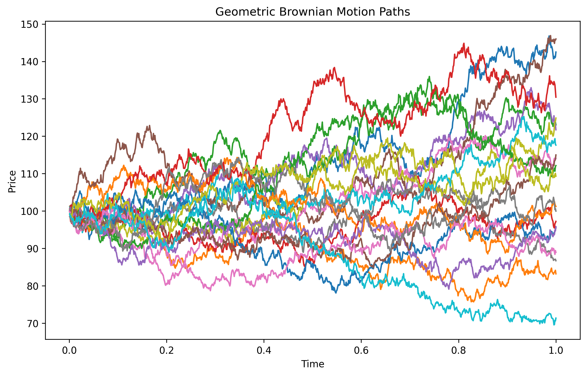
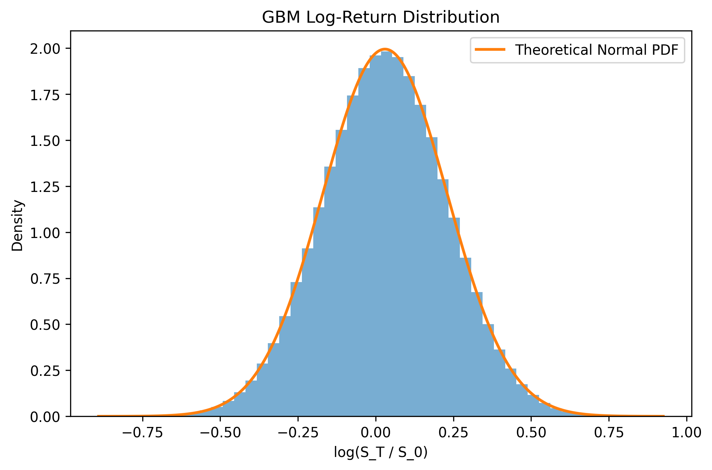
Analysis of NASA Mission Data
As I looked to develop my data analysis skills, I began an extensive study of large
datasets produced by NASA missions. I sourced the data from NASA's own database archive
and cleaned it using excel and Python before studying the datasets and drawing my own
insights.
The first dataset I looked at was from the Cassini-Huygens mission. I wanted to go more
in depth on some of the data from Enceladus, specifically the plumes which contained
information about the subsurface ocean I studied in my icy moons project. I began by
downloading a set of large, complex datasets directly from NASA, and cleaned and combined
these into one dataset, containing only the information that I was interested in. My next
step is to study these datasets and produce some meaningful insights using Python.
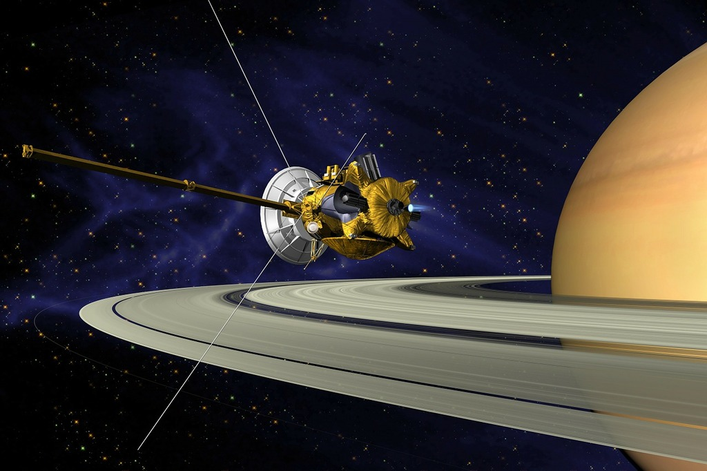

Weather App
Last year I was approached with an issue faced by a UK water company - they had
several remote sites, many of which provided inaccurate or limited weather data.
This is damaging to the company as they need accurate weather predictions whenever
they wish to conduct work or training sessions on site. They need data to help
decide when to complete repairs such as cement laying and work on underground
cables/pipes, and since they regularly host training exercises for military and
police teams' accurate data is crucial. A resolution could save a lot of money for
the water company and their collaborators.
As a solution, I came up with the idea to build them a website which takes data from
multiple sources and compiles it to produce an accurate catalogue of past weather data.
Using this I was able to produce more reliable data for up to 20 years in the past in
some postcodes. The app is easy to use and requires a user to simply input a UK postcode
to produce an output. The output is visualised in four tabs, the first two showing data
for variables such as temperature and precipitation in the form of charts and tables. The
third tab contains plots showing the change in monthly averages across the years for which
data is available, allowing a user to look at specific months and variables individually.
The final tab provides a prediction for the future. This data is produced using a machine
learning model, which takes past data and generates a prediction and error range for weather
patterns in the future. Users can select a range of years for the past data, all the way
back to 2005. They can also select any of the available variables to plot the monthly average
each year of, allowing for trends (like increasing temperatures each year) to be easily spotted.
A user can also adjust plotting characteristics - showing trend lines or error bars - for all
plots. They can also extend the forecast produced by the machine learning algorithm from 1
to 24 months in the future, and for longer forecasts you can clearly see how quickly the
uncertainty can grow. After running an analysis, users can download plots and data tables for
their own use, crucial for a company trying to justify when they could complete work and
training sessions on their sites.
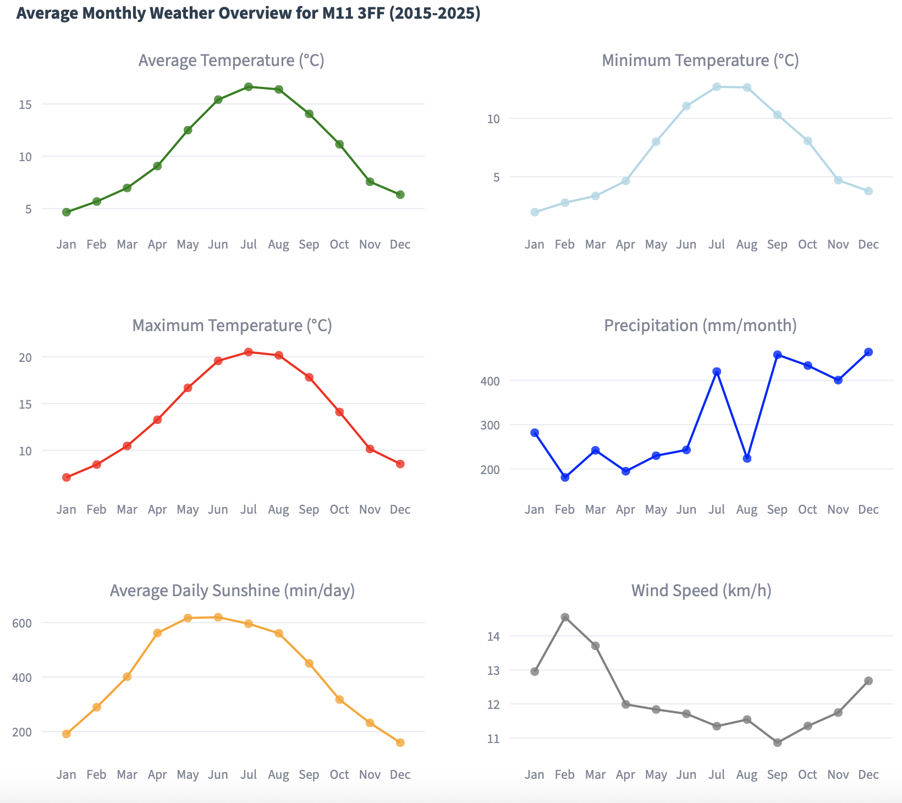
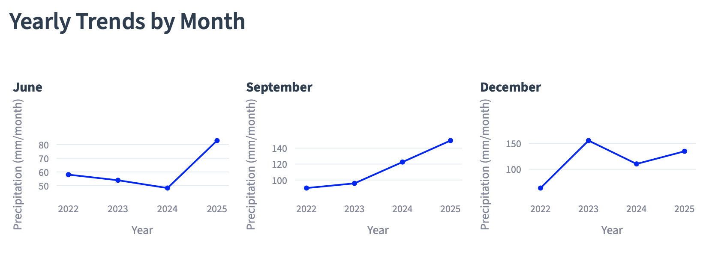
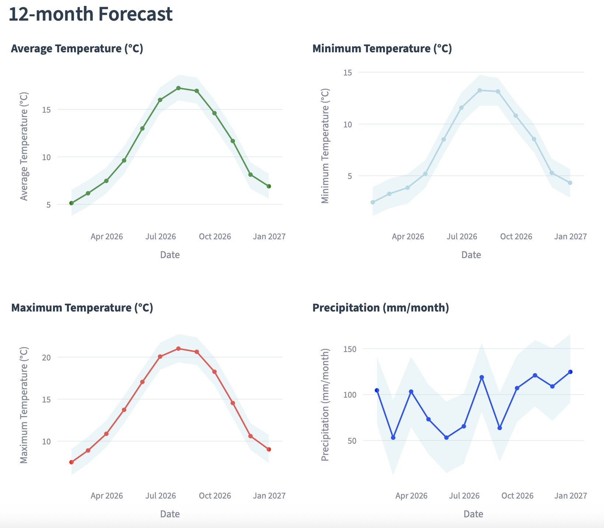
Study of Various Planetary Atmospheres
I am currently working on a detailed analysis on the makeup and behaviour of
the atmospheres of various planets - both in our solar system and further afield.
I am hoping to produce plots of densities, chemical composition, velocity, and
other factors, to allow me to assess how the surface could be impacted. I also
hope to study why Earth's atmosphere is ideal for life, and what we should be
looking for when searching for planets that may contain or sustain life.
Much of the data I am using is sourced from NASA, and after a lengthy cleaning
process I began to conduct my analyses. So far, I have only studied planets in
our solar system, and I have plots of things like density, composition, and
depth. I have also begun implementing my oceanic circulation to try and model
atmosphere flow, where I hope to produce snapshots of the temperatures, pressures,
and direction of circulation. I want to add data on some key exoplanets, to allow
for comparison between our solar system and crucially Earth's atmosphere, where
I can discuss potential for living organisms and optimal conditions for life.
In future I hope to implement this as part of my own exoplanet app - containing
interactive details of a large database of known exoplanets.
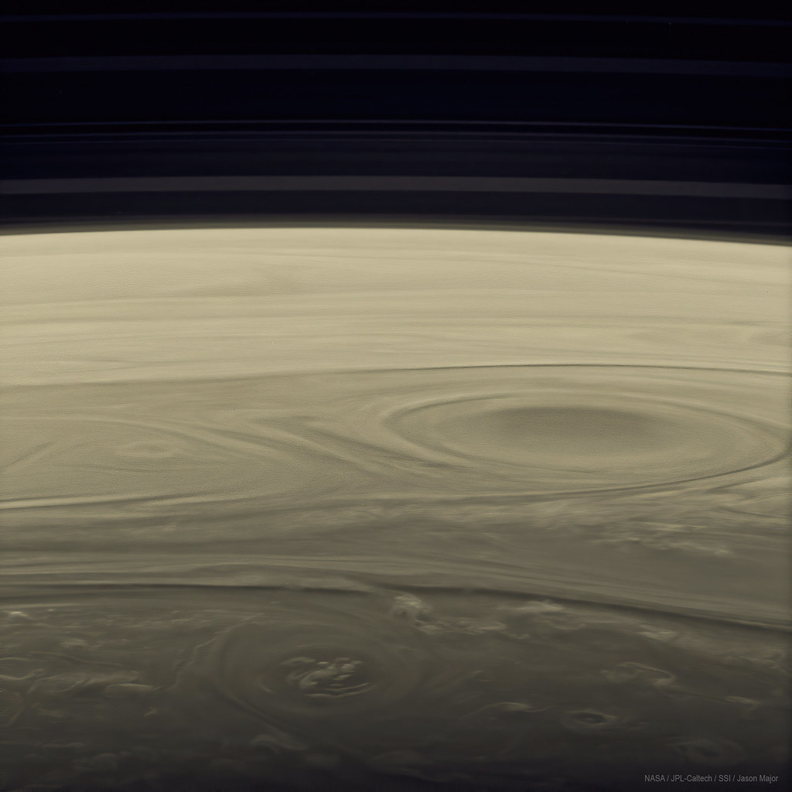
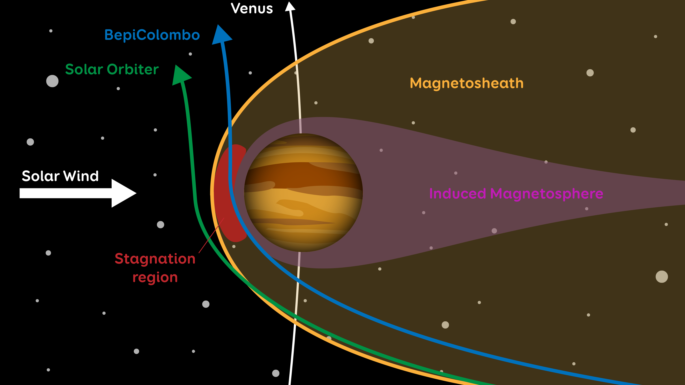
Study into the Origins of Dark Matter and Dark Energy
In my final year of university, I completed a brief study on the topic of dark
matter and dark energy. I was tasked with producing a 2-page piece of research
on an applied mathematics topic of my choosing - I selected the discovery of
dark matter and dark energy. I conducted extensive research of the topics,
relishing the opportunity to learn about a topic of deep personal fascination,
before completing my report (attached). I began by discussing evidence for dark
matter, talking about the work of Franz Zwicky and including equations to support
reasoning, before moving on to Vera Rubin's study on the rotational velocities
of spiral galaxies. I then moved on to dark energy, where I covered the Friedmann
acceleration equations and Einsteins famous field equations to contextualise the
accelerating expansion of our universe - attributed to the existence of dark
energy.
To produce this report I used LaTeX, a document preparation system in which code
is used to generate high-quality scientific documents. I used this software for
several documents including my THC dissertation and typed notes of my university
studies.
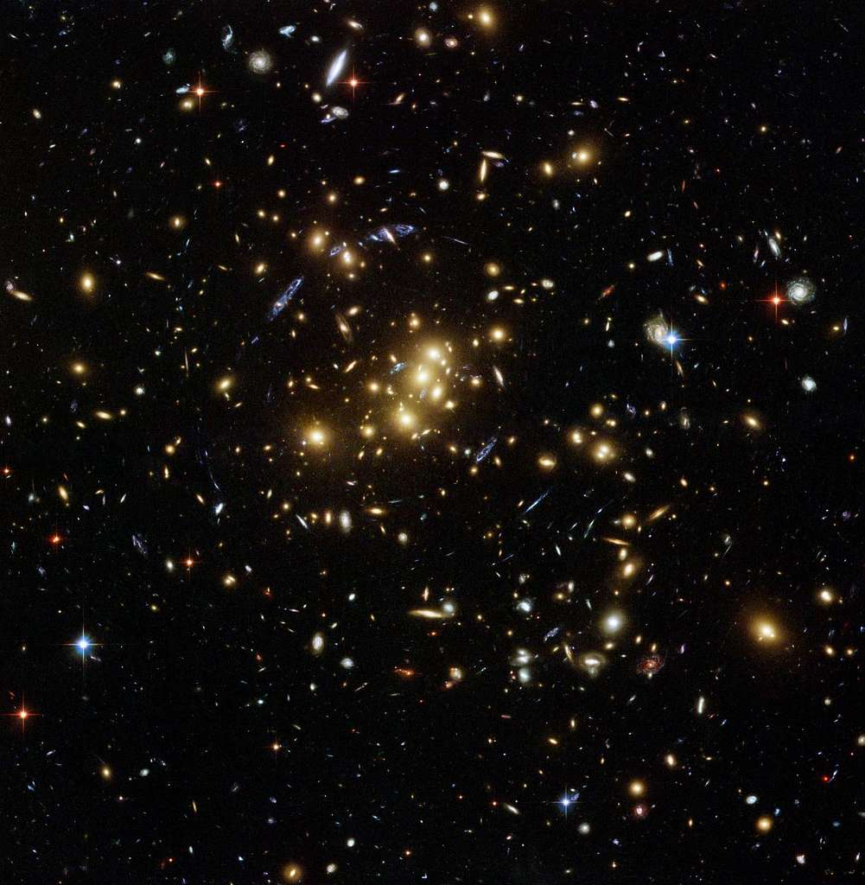
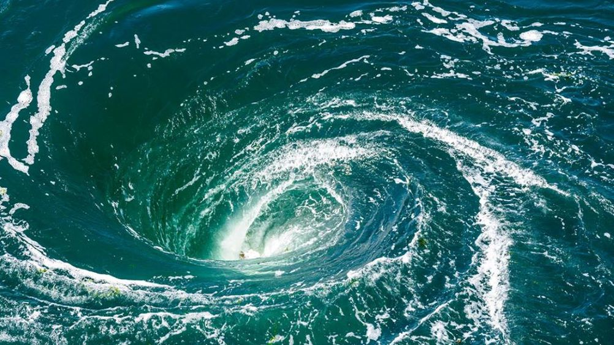
Vortex Point Dynamics
As part of a group project, I was tasked with producing an in-depth report on
vortex point dynamics. Whilst some of this report required notes on basic fluids
and characteristics of flows, I wanted to be able to produce useful plots of different
vortex interactions in Python. Whilst my colleagues worked on other aspects of the
report, I applied my advanced coding skills to this, producing velocity-field diagrams
of simple vortex behaviour - such as vortex coalescence and fission. I then added greater
complexity, producing plots of N vortices, and showcasing the image method - a method used
to predict vortex behaviour when near a solid boundary.
After the completion of this project, I wanted to push myself further and so developed a
programme to simulate vortex interactions and movements in the form of an animation. The code
takes in initial locations and circulations of N vortices, before using the Helmholtz point-vortex
equations to simulate their behaviour (including annihilations) and their resultant paths. The
result is then output in the form of an mp3 file, showing the movement of the vortices and
their behaviour. This is a useful indicator of vortex interactions and can be useful for
simple problems whilst also being scalable to more complex fluid problems.
Next, I plan to write a similar program using the Gross-Pitaevskii equation, allowing me to
accurately simulate the behaviour of more complex quantum vortex problems. This will be useful
for some of my other projects, such as my atmospheric model or further studies into dark matter,
as these contain some quantum fluids problems.
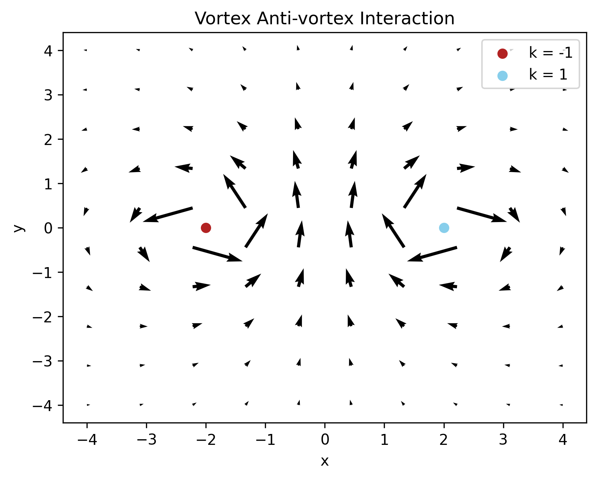
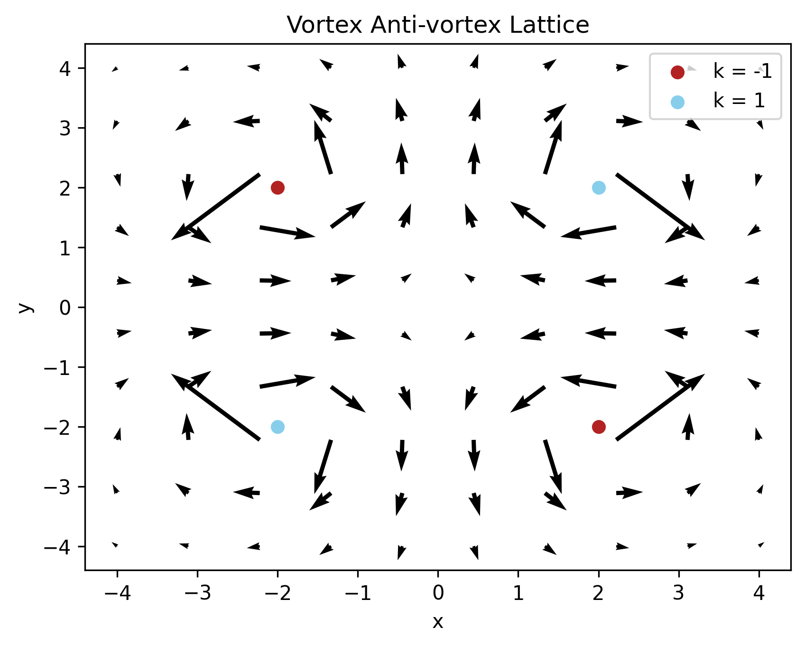
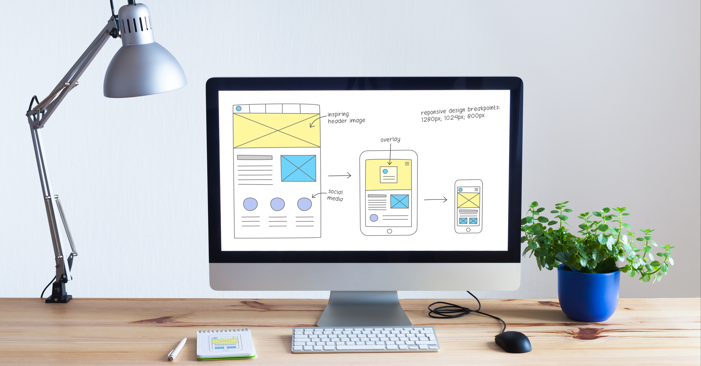
Personal Web Portfolio
As I worked on more projects, I found that I wanted a place to showcase my work.
As a solution, I decided to build my own website portfolio containing details of
my achievements. I built the site using HTML, CSS and JavaScript, and started by
constructing an initial site layout and colour scheme. After designing a homepage,
I continued this aesthetic throughout the additional pages and linked it all together
using a navigation bar. All these elements were styled using CSS, giving my site a
clean look. I completed the project by typing up content - discussing my projects and
skillsets - adding images, links and interactive PDF files to showcase my work.
Once I had the structure of my site perfected, I began to work in JavaScript to give my
site a more professional feel. I began by creating a simple interactive navigation
bar, which resizes as the user scrolls. I added a current project section to my
homepage, with tabs showing content and a changing image to match each tab. I
wanted to elevate my projects page, and so I came up with the idea of using a
cover image to highlight the project, before allowing a user to click on the
project to reveal more information. This was all done in JavaScript, and whilst
working on this I added a few more projects. The text being hidden until clicked
allowed me to add more content without the overall view of the page being affected,
and so I could add more images of my projects and go into more detail. I expanded
this idea to highlight four key projects on my homepage, using an image slideshow
which redirects to each project. Finally, I made my contact details stand out with
a reactive footer, which appears behind the page content as the user scrolls to the
bottom.
After applying the finishing touches, writing up the rest of my content,
and including all my images, the project was complete. However, I can easily add
additional projects and update any information and images when required, and I
will be regularly updating my site - in particular my current project on
atmospheric circulation.
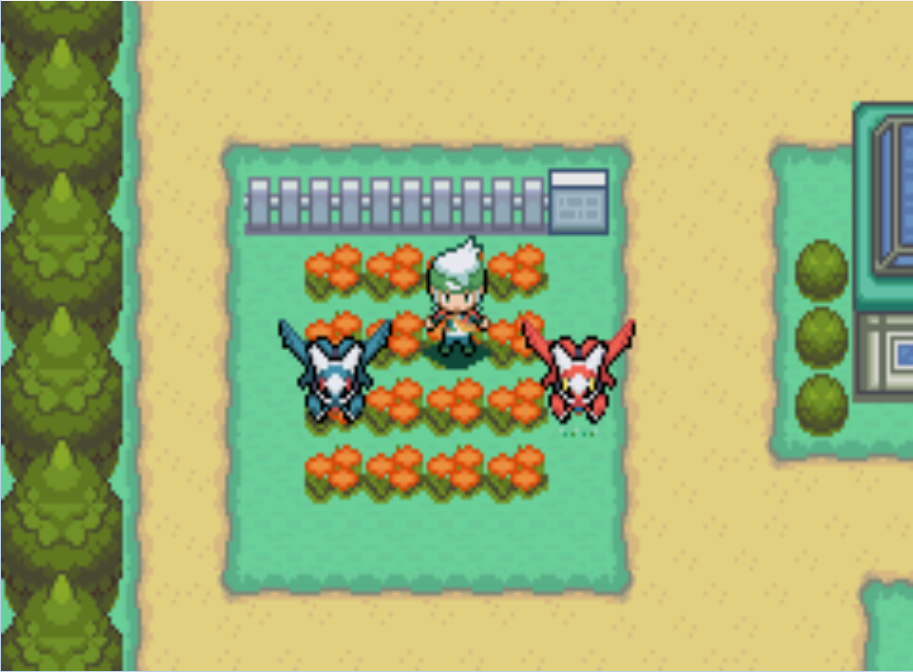
Extra Coding Projects
I have completed several additional coding projects to help me
develop my coding comprehension further. Some of these projects have
been more practical - such as my QR code generator and my discord bot -
whilst some purely for practice or my own entertainment.
Once I had a grasp of the basics I wanted to apply this knowledge to some
real projects. I found Codedex (LINK???????) to be helpful in providing
inspiration, and the site also provided detailed project tutorials to help
resolve any issues I had. With the help of Codedex, I built a programme to
generate a QR code to any given link. Once I had completed the tutorial I
decided to work on the project some more and added user input options. This
allowed a user to run the programme, and simply enter a link, file name, size
and colour, before generating their code - making the programme accessible to
everybody. Following a similar tutorial I built a GIF generator, allowing a user
to generate a GIF from a collection of images. I also built some simple calculators,
again allowing for user input. First, a calculator for the surface area and volume
of planets in our solar system, which simply requires a user to select a planet
before returning the values. I also built solvers for quadratics and cubics,
simultaneous equations, simple ODEs and PDEs, and cryptographs. I am currently
working on a programme to resolve classical fields (electric and magnetic).
I have also worked on some games. I started with relatively simple concepts (again
looking to Codedex for inspiration) and built interactive hangman and slot machine
games using Python. I also wanted to complete some more work using JavaScript, and
so I completed a tutorial to build a Flappy Bird game. Although this proved a challenge,
I eventually had a fully controllable game, and a sprite which interacted with its
environment. I am now working on my own 2D Pokémon game. I want to have all the features
of the early games, with my own locations and characters and a selection of Pokémon. I
will build this using mostly Python, although may have to expand to other software for
some more complex aspects.
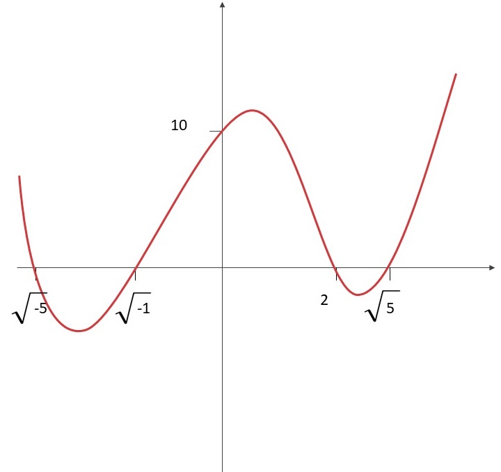
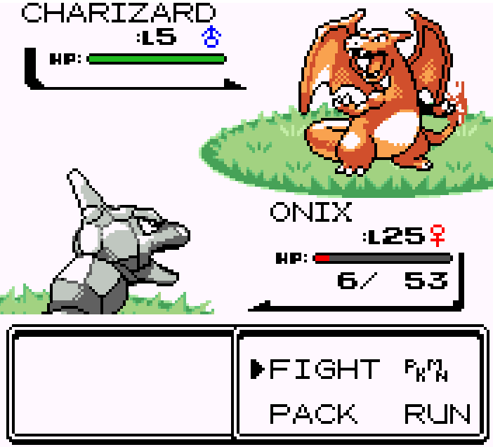
Additional Data Analysis Studies
To further develop my data analysis skills, I completed studies of
a variety of large datasets. I began by working in Excel, where I
created my own music dataset of song and album ratings. I studied
this data to determine preferences and personal rankings of artists,
songs and albums. Next, I looked at financial data - working with
large sales datasets. I investigated yearly and quarterly growth and
looked at the effects of regional price changes or changes in stock
volume.
Much of my data analysis work is done in Python, and so the first
large dataset I tackled was on UK house prices. Using skills picked up
from my statistics modules at university, I studied linear regression of
prices and size. After cleaning my dataset, I produced some simple plots
to visualising my data. Once I had an idea of how the raw data was
distributes, I used a linear regression model to generate predictions
for house prices based on their size. Although this is a simple model,
it works as a guide for realistic prices. Of course, house prices are
determined by much more than the floor area, and so additional parameters
could be added from other datasets to provide a more accurate representation
- or this model could be used as a guide to set a baseline price, which is
then adjusted using another model to account for things like location,
utilities, garden, etc.
Next, I wanted to conduct some analysis on my favourite sports, as I had
found some interesting datasets on Kaggle (LINK???????), containing data on
all-time NBA teams and players, and Premier League players in the 2026/27
season. I began with the latter, as it was a smaller dataset and would help
to develop my skills before tackling the more detailed NBA dataset. I used
Excel for this analysis, and after importing my data I set about cleaning
and restructuring my dataset. I wanted to compare players by position, and
so I created smaller datasets for forwards, midfielders, defenders, and
goalkeepers. For each of these subsets, I decided on a set of key metrics
which I would use to compare players (for example I would compare goals
amongst forwards, but not amongst goalkeepers). I used these parameters
to find some of the star performers from each position during the season.
When looking at midfielders, I selected the four standout players and went
in depth to try and establish who was the top performing midfielder, comparing
different traits and styles of play. I also looked at outliers - any players
who vastly overperformed or underperformed based on their previous levels -
and theorised the possible reasons behind this change. I realised that my
groupings (defenders, midfielders, forwards) were too broad. For example, a
striker and a winger or a centre back and full back play very different roles
in a team. This led to me studying the top performers for each role - not
just position - allowing me to have a more accurate idea of players strengths
and weaknesses in various roles and allowing me to see what makes a player
'strong' in each position - showing that some players could thrive in
alternative roles. This in-depth analysis not only strengthened my
understanding of the sport I love, but more importantly gave me confidence
handling large datasets in Excel and generating meaningful insights. I am
currently working on the NBA dataset, cleaning the data and deciding what
metrics I want to study. I am going to conduct this data analysis using both
Excel and Python, and hope to gain some valuable insight.
Next, I want to study Spotify data, as I have found an interesting dataset on
streaming data. I also hope to build a model to simulate predictions for NBA
and Premier League seasons and investigate how accurate I can make my model.
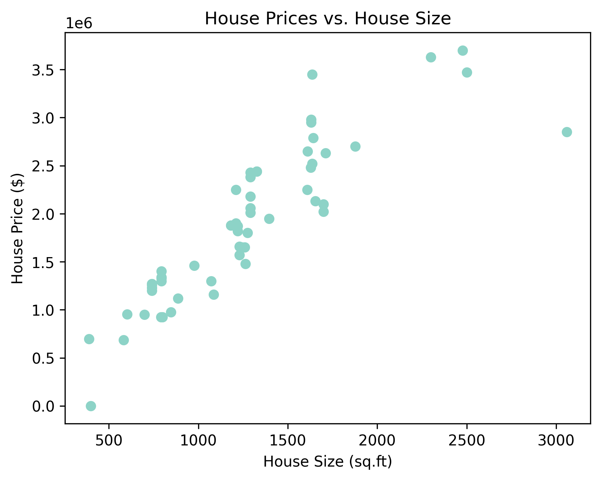
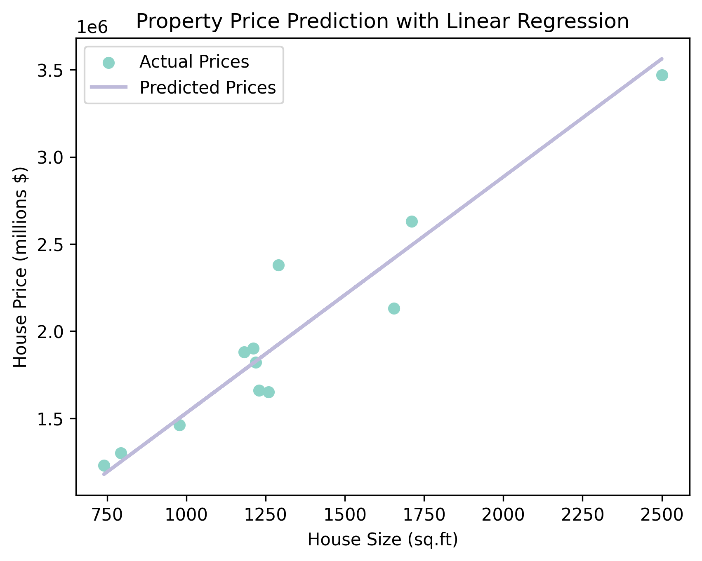
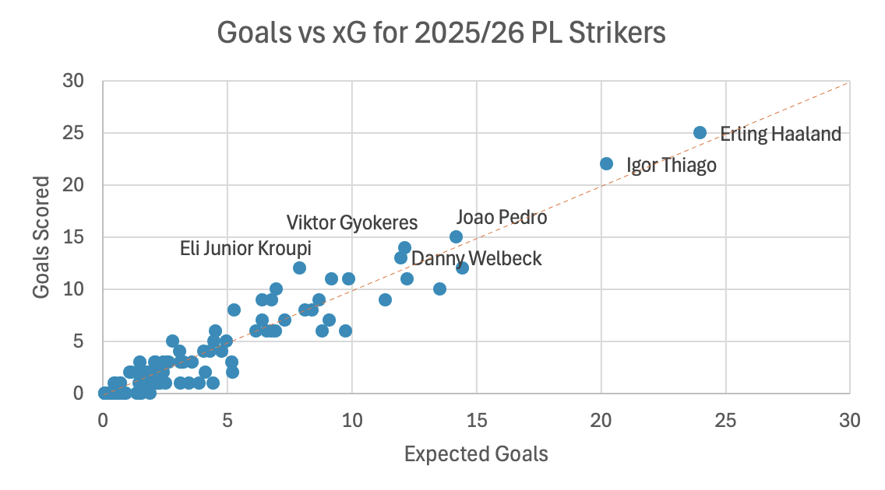
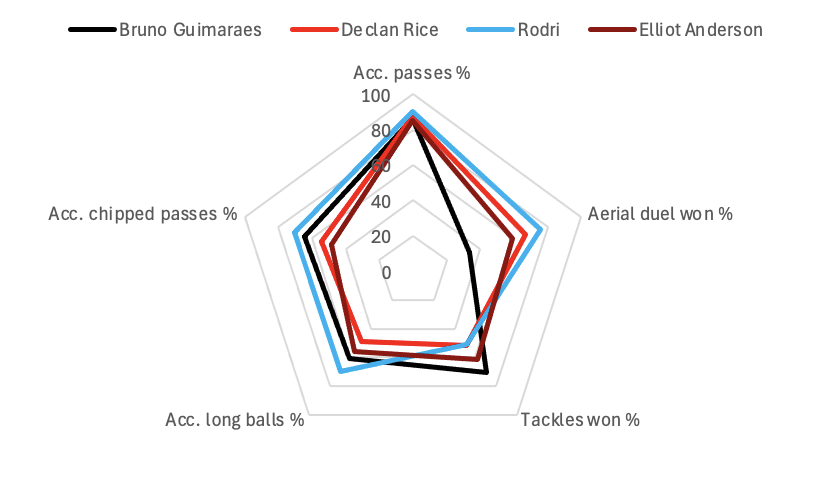
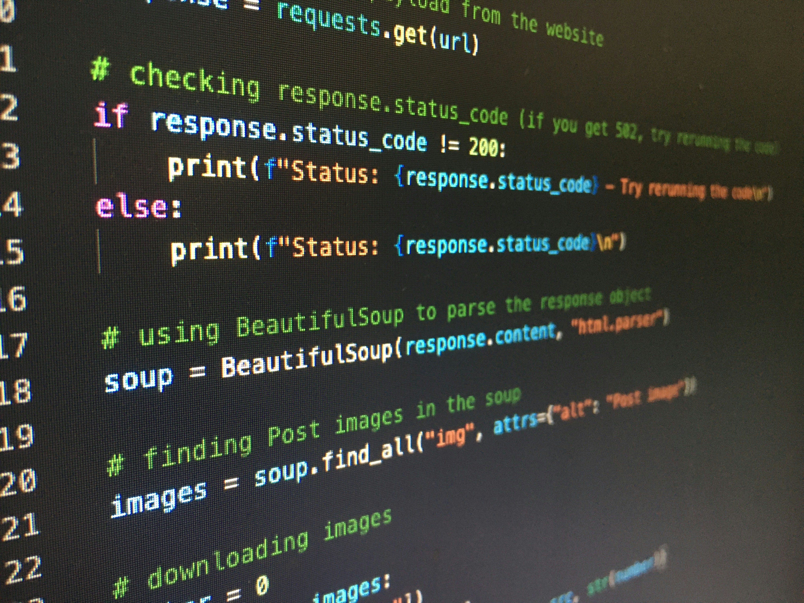
General Coding Skills
I have completed a number of courses to develop my coding skills, both online
and in person.
I completed some beginner courses on Codedex, where I developed a foundation
in Python, SQL, and HTML/CSS/JavaScript. Their Python courses taught me about
loops, data structures, functional programming and testing, whilst I also completed
tutorials on the NumPy, Pandas and MatPlotLib packages. Using these, I was able to
build simple models, solve complex calculations, and plot various functions. I
learnt how to produce quiver plots and surface plots, which proved valuable in my
later work. I learnt to manage and
analyse databases in SQL and learnt the basics of web development with HTML/CSS/JS.
Once I had this foundation, I could work on some of the projects mentioned above. I
have recently begun to study their courses on C++ and C# to diversify my skillset.
Whilst at university, I completed three coding modules. The first was using R for
statistical analysis, and as this was my first time using the software, I developed
a strong foundation to prepare me for further studies. Next, was an advanced module
on R, where I completed detailed statistical analysis on many large datasets. At the
end of this module, I completed a report on a music dataset, where I used my statistical
knowledge to use R to draw conclusions about this dataset. The final module I took was
a Python module - which gave me my first look at the software and sparked my interest in
learning more. Here, I learnt to solve complex problems involving quadratics and higher
order functions. I studied root finding using various methods, and generated complex quiver
plots for ODEs. I also used Python for my group project on vortices and worked closely with
my supervisor to learn how to generate vector plots and accurate simulations - whilst I
primarily used Python for my dissertation on oceanic circulation.
I undertook an advanced Python course using Codility - a 17-week programme where I completed
lessons and exercises. This course contained several 'typical' coding problems on algorithms,
sorting and arrays. I wanted to develop my Python skills and be confident answering problems
and working with the software - this course certainly helped me to reach this goal.
In 2025 I completed an advanced Python finance assessment. In preparation for this, I completed
exercises on algorithms and logic, machine learning and financial probability, whilst also
revising some general coding skills. The actual assessment contained questions testing
loops, counting, and string construction.
I recently completed an independent course using R, as I wanted to push my statistical analyses
to a higher level. Here I learnt how to produce box plots, and detailed scatter diagrams. This
led to a large project at the end of the course, where I worked with a dataset from the 2018
FIFA World Cup, combining my skills to study the data and produce detailed plots for a report.
I now feel confident using whatever coding language is most effective for a project, and I feel
I can work independently on whatever projects I want to study in the future. I hope to
complete further projects to continue to learn the nuances of each piece of software and
continue using coding to broaden my understanding of my other interests.
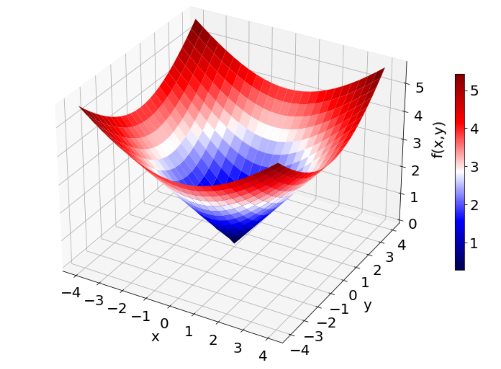
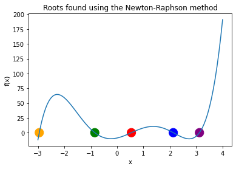
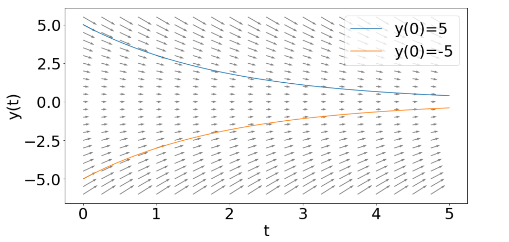
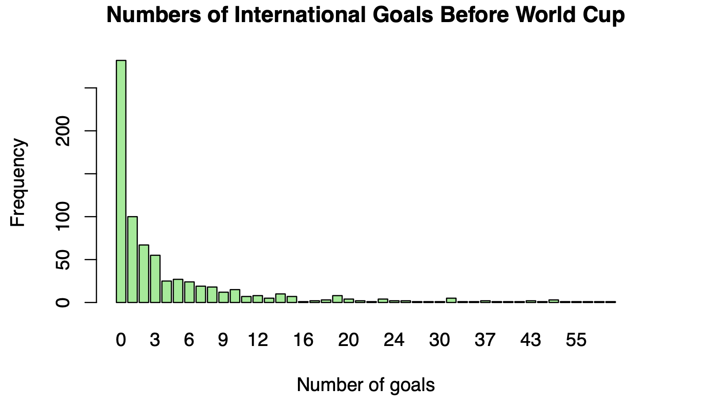
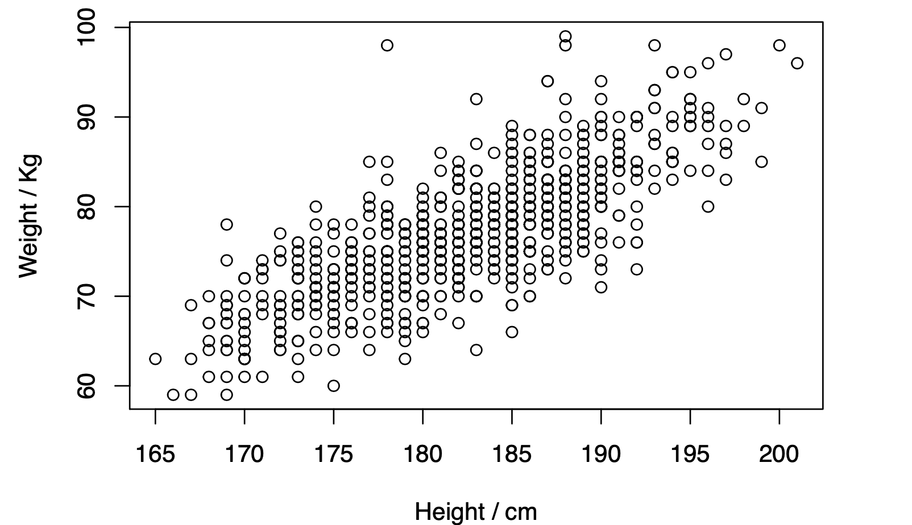
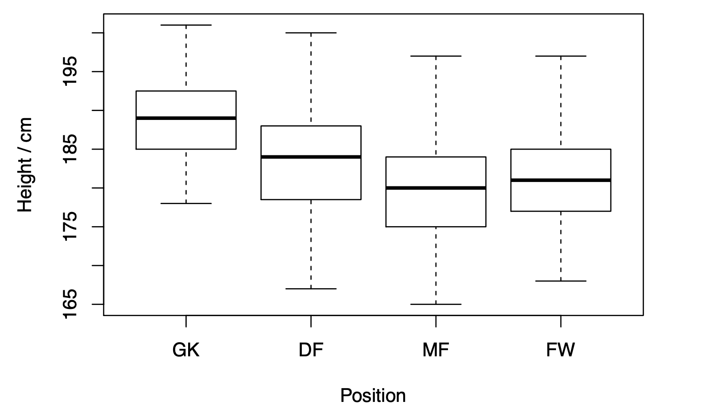